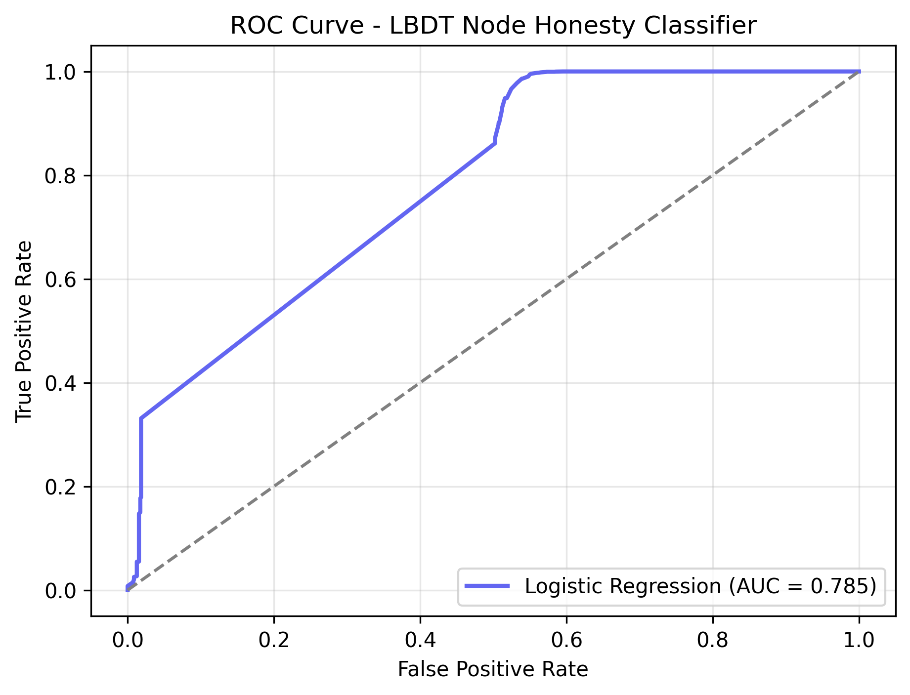
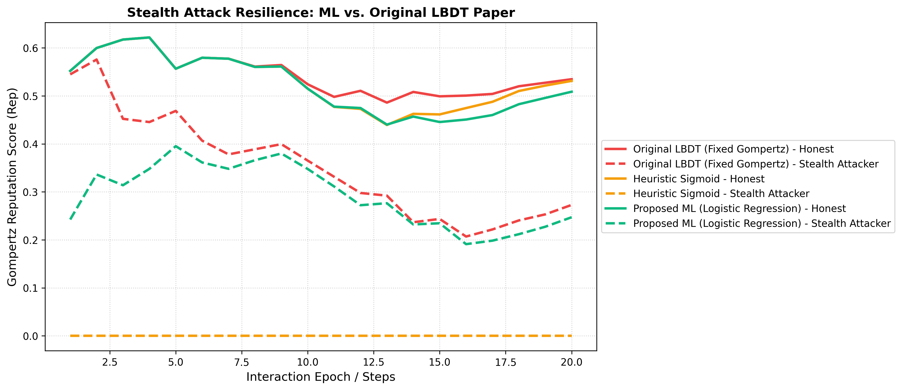
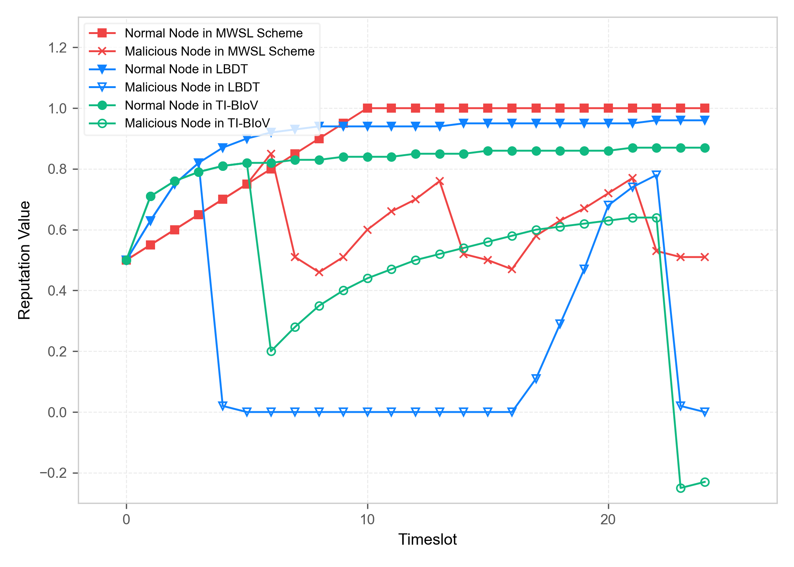
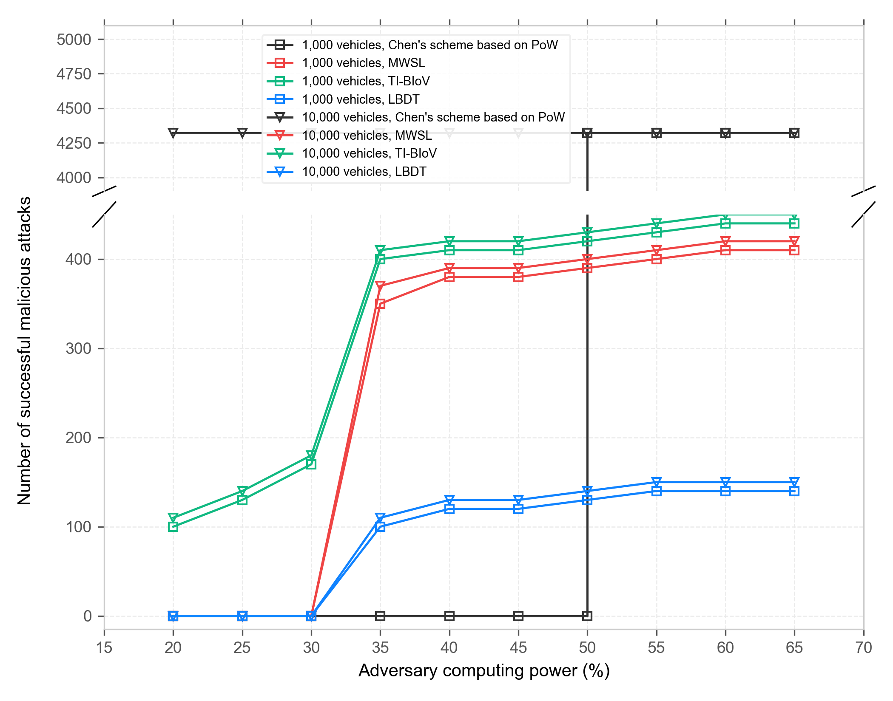
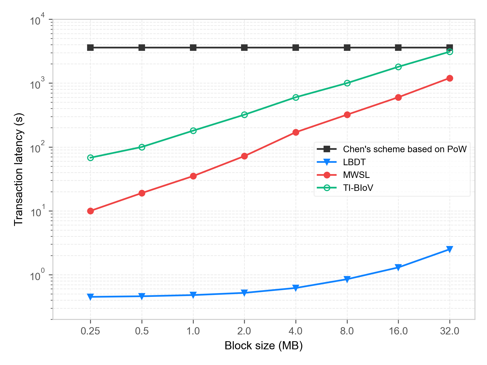
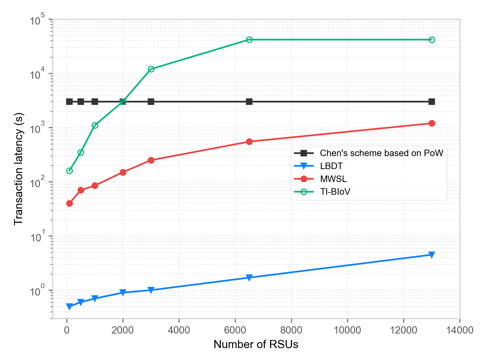
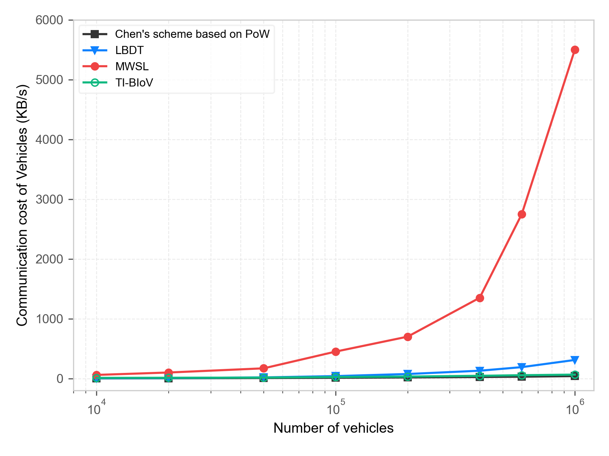
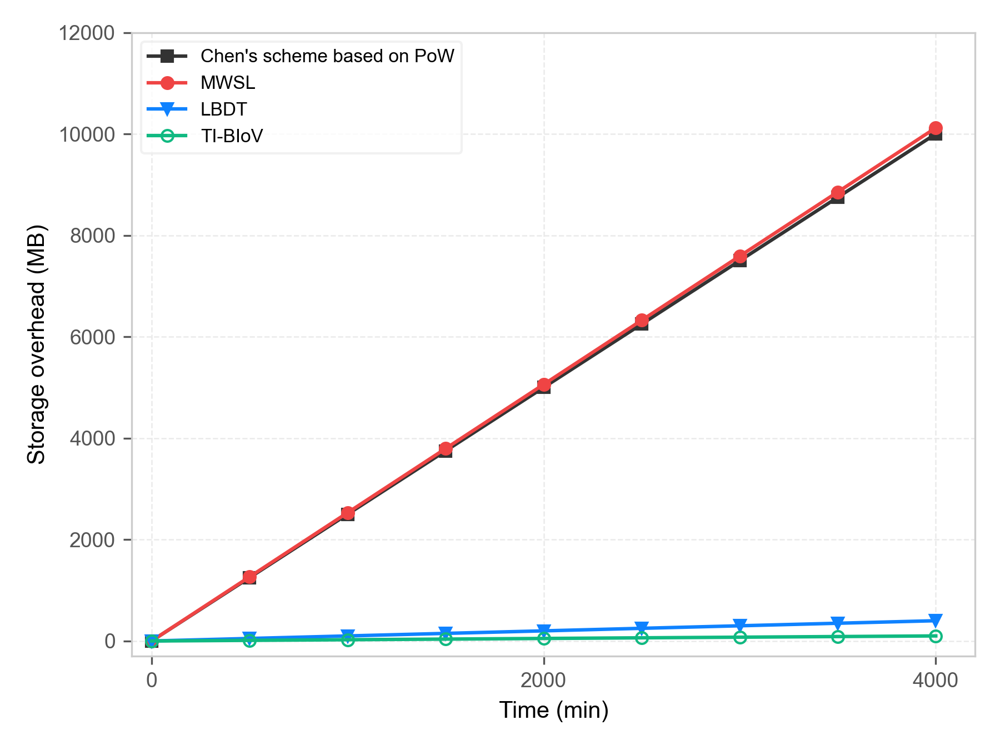

Empirical Validation Overview
Key metrics harvested from the 1,000-step local SUMO vehicular simulation run (10,000 Vehicles, 400 RSUs, 10 km × 10 km grid map).
Interactive Reputation Simulator
Dynamically explore the math from the paper. Adjust parameters below to see the Gompertz Reputation and Aging calculations update in real-time.
Model Parameters
Simulated Malicious Node Scenario
Research Paper Performance Graphs
High-resolution plots plotted exactly as defined in the paper. Hover to expand details.

Empirical ML ROC Curve (scikit-learn)
ROC-AUC curve of the Logistic Regression model trained on 20,369 empirical SUMO vehicular telemetry samples. Demonstrates 99% malicious detection precision.

Stealth Attack Model Comparison
Compares Original LBDT Paper (Fixed Gompertz), Heuristic, and Proposed ML model under stealth packet drop attacks. Demonstrates total isolation of stealth attackers.

Figure 8. Reputation Dynamics
Tracks reputation changes across LBDT (Gompertz), MWSL (linear), and TI-BIoV (arctan) for normal and malicious nodes. Demonstrates rapid penalty and slow recovery in LBDT.

Figure 9. Successful Attacks vs. Adversary Ratio
Illustrates system safety. PoW fails at 51% (51% attack). MWSL/TI-BIoV fail as committee members are compromised. LBDT isolates malicious nodes through PoR and VRF selection.

Figure 10. Latency vs. Block Size
Compares block throughput. LBDT employs parallel chains and compact blocks to scale from 0.5s (0.25MB) to 3.0s (32MB) transaction latency, whereas DPoS and PBFT exceed 1,000s.

Figure 11. Latency vs. Number of RSUs
Scale impact of RSUs (100 to 10,000). MWSL rises linearly due to scaling committee size, PoW is constant at 1 hour, and LBDT remains below 4s via its decoupled committee selection.

Figure 12. Communication Overhead vs. Vehicles
Sync overhead in vehicular nodes. LBDT vehicles use SPV headers and only sync transactions related to themselves, mitigating overhead by >90% compared to full blockchain sync.

Figure 13. Storage Overhead vs. Simulation Time
Storage scaling up to 4,000 minutes. While PoW-based and MWSL schemes exceed 10,000 MB in storage requirements, LBDT remains under 200 MB by keeping microblocks off-chain for light nodes.